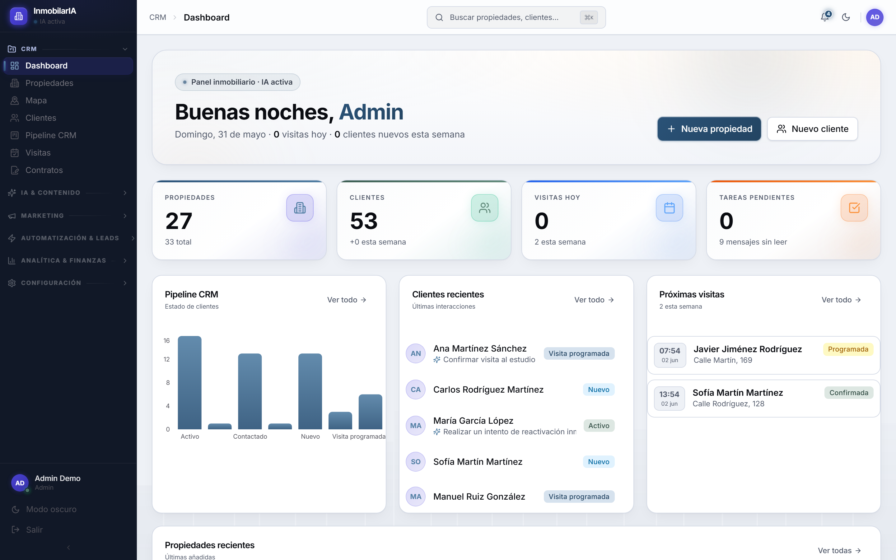

Captación, CRM, contenido con IA y cierre — en una sola plataforma web y de escritorio. Menos fricción, más operaciones cerradas.

Recorrido visual con datos de demostración. Sin backend ni datos reales.
Las agencias pierden operaciones por fricción: leads sin seguir, tareas manuales, contenido lento y datos dispersos. InmobilarIA lo centraliza y delega lo repetitivo en IA.
Pipeline visual con priorización por IA para no perder ninguna oportunidad.
Agente de WhatsApp que responde y cualifica leads de forma automática.
Anuncios, home staging y vídeo generados con IA, no en días.
Analítica en tiempo real del embudo comercial de cada agencia.
Lead scoring, asistente comercial, agente de WhatsApp, tasación visual y generación de contenido.
Miles de propiedades en mapa sin lag, con agrupación dinámica.
Perfiles de agente, asignaciones, permisos por rol y métricas reales.
Documentos corporativos listos para cliente.
Reglas por evento para nutrir leads sin intervención manual.
Consentimiento, páginas legales y gestión de datos personales.
Capturas reales de la aplicación · datos de demostración.
Un equipo pequeño gestiona toda su cartera y cierra más rápido con priorización por IA.
Cada oficina opera aislada (multi-tenant) bajo una misma plataforma.
El agente de WhatsApp cualifica leads entrantes fuera de horario.
Anuncios y home staging generados en minutos.
Web moderna + aplicación de escritorio, con un backend de servicios y modelos de IA para las funciones inteligentes.
Usuario ↓ Frontend (web / escritorio) ↓ API de servicios ↓ Base de datos
El detalle de implementación, versiones, infraestructura y arquitectura interna se mantiene privado de forma intencionada.